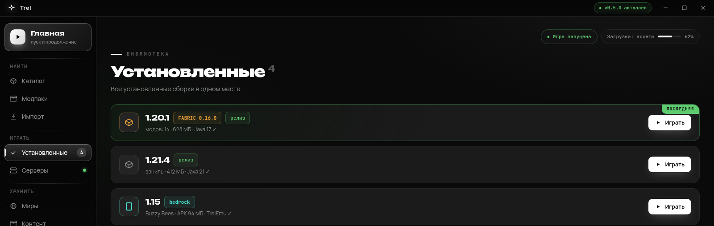
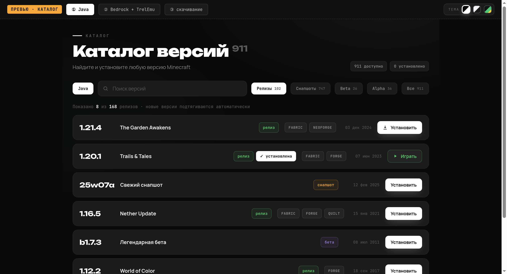

v0.5.0 · Windows и Linux · открытый код
Лаунчер Minecraft
без рекламы и регистрации
Каталог Java- и Bedrock-версий, модлоадеры, моды, миры, серверы, скины и импорт из других лаунчеров. Играй гостем или войди через Microsoft.
Windows 10/11 · AppImage, deb, rpm · бесплатно, MIT

Установленные сборки: запуск, моды и миры у каждой версии свои

Каталог: от rd-132211 до свежих снапшотов, фильтры по типу версии
Что умеет
Всё нужное — из одного окна, ничего лишнего.
📦
Любая версия в один кликОт rd-132211 до новейших снапшотов: релизы, снапшоты, бета, альфа. Список обновляется сам.🧩
Моды без болиFabric, Quilt, Forge и NeoForge ставятся поверх версии автоматически. Есть возврат к ванили.📱
Bedrock + TrelEmuМобильные версии Minecraft на ПК через собственный эмулятор (Windows).🎨
Скины45 готовых скинов или свой PNG. 3D-превью, модели Classic и Slim.🌍
Миры и серверыСохранения всех версий с бэкапом в один клик. Свой сервер: версия, память, запуск, консоль.📥
ИмпортПеренос версий, миров, модов и аккаунтов из TLauncher, Prism, ATLauncher и других.
Скачать
Все файлы — на странице релиза. Автообновления подтянут следующую версию сами.
🪟 Windows 10/11
Trel-0.5.0-x64.exe — установщикTrel.exe — portable, можно на флешку
Скачать для Windows
🐧 Linux
Trel-0.5.0-x86_64.AppImage — запуск без установкиTrel-0.5.0-amd64.deb — Debian / UbuntuTrel-0.5.0-x86_64.rpm — Fedora и подобные
Версии для Linux
Первый запуск
Три шага — и ты в игре.
1
ПрофильВведи никнейм для гостевой игры или войди через Microsoft для официальных серверов.2
КаталогОткрой «Каталог», выбери версию Minecraft и нажми «Играть».3
ИграЛаунчер сам скачает игру, библиотеки и подходящую Java.
Частые вопросы
Это бесплатно?
Да, полностью. Открытый код под лицензией MIT, без рекламы, без платных функций.
Нужна ли лицензия Minecraft?
Для одиночной игры и серверов без проверки лицензии хватит гостевого профиля. Для официальных серверов войди через Microsoft.
Работает ли на Linux?
Да: AppImage, deb и rpm пакеты. Bedrock через TrelEmu — только Windows.
Где хранятся данные?
Windows — %APPDATA%\Trel, Linux — обычно ~/.config/Trel. Путь к игровой папке меняется в настройках.
Это безопасно?
Код открыт, клиент скачивается только с официальных серверов Mojang. Лаунчер не обходит лицензию.